M1 / CORE COMBAT
自动战斗
已实现并验证待人工验收
三种攻击 · 波次 · 升级 · 首领
待验：易用性、乐趣与时长
在被侵蚀的海岸自动作战。集结同伴、选择转职，以深渊契约换取力量。

按实现与验证状态展示，无估算百分比。
三种攻击 · 波次 · 升级 · 首领
待验：易用性、乐趣与时长
永久等级 · 六条转职 · 双同伴
待验：普通玩家完整流程
剧情救援 · 票券抽取 · 代币兑换
待验：完整离线手动游玩
腐化 · 契约 · 三类事件 · 章节
性能未达标；契约理解待测
“已实现并验证”仅指列出的自动行为与对应历史受控图形检查；不代表玩家体验或性能验收。代码、Resource/场景接线与日志共同支撑状态。未发现核心功能仅有实现而完全无测试；显示延迟等验证缺口另列。最终验收任务仍保持未勾选。
战斗内成长每局重置，结算后的角色成长保留。
选角色与最多两名同伴
确认种子，开始移动
拾取经验、升级、处理事件
9:00 首领登场；击败才胜利
保存奖励、招募、成长与转职
主动放弃不发奖励。失败仍可结算已赚取奖励；已救下的 Sera 也在胜负结算时加入。
点击实测截图查看原图；展开卡片可追溯实现。
走位生存，武器自动寻找近敌。
你可以边移动边拾取经验，以三选一升级构筑本局能力。
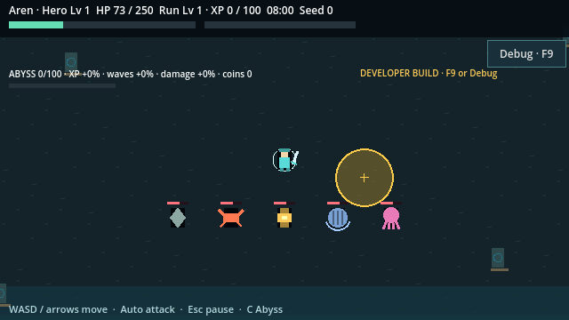
六名角色，三种基础作战方式。
初始拥有 Aren、Lia、Milo；救援或招募后可选其余角色。
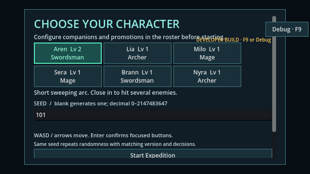
永久等级 15，消耗一件转职道具。
你可以预览两条分支，永久选择一种攻击流派，并保留角色被动。
PromotionService校验等级、道具与职业归属；abilities / integration_m2 本次通过。查看真实分支树。

六种角色被动，十二种局内升级。
用攻速、范围、防御和特殊效果搭配角色；转职还带第五次攻击效果。
被动执行器读取技能 Resource；Might 等十二种升级注册于目录。unit / abilities / recruitment 本次通过。
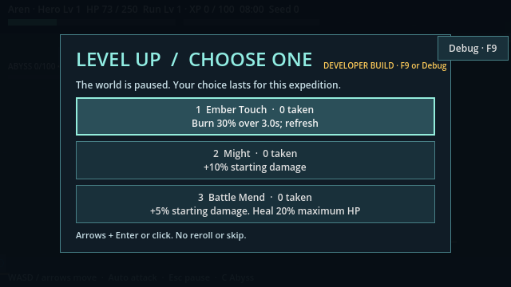
五种常规敌人、召唤幼体与海岸首领。
识别追击、冲刺、远射、抗击退和召唤行为，避开首领预警。
固定波次与 Tidebound Hierophant已接线。unit / full_run / integration_m4 本次通过；首领于 9:00 登场，没有十分钟自动胜利。
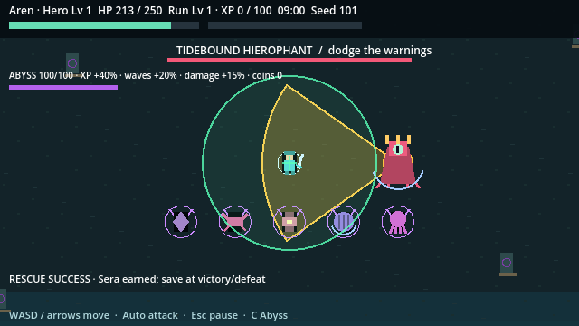
最多两名已拥有角色自动跟随作战。
在 Roster 配队；同伴造成半额伤害，倒下后下一局恢复。
跟随控制器与角色工厂接线；abilities / integration_m2 本次通过。结算参与者含倒下同伴；本局无复活。
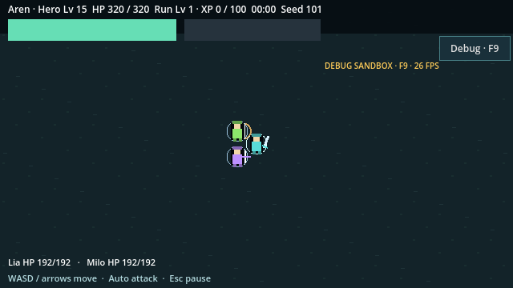
四分钟救援 Sera，守住区域三十秒。
未拥有 Sera 时必出救援；成功后在胜负结算招募她。
救援 Resource复用现有目标；recruitment / integration_m3 / integration_m4 本次通过。离圈或死亡失败；已拥有时按 M4 三类事件随机，成功另得一张结算票。
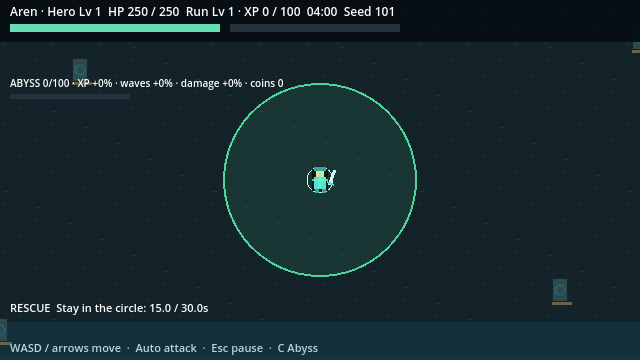
Brann / Nyra 各 50%，单抽或十连。
消耗 1 或 10 张票；重复角色得代币，5 枚兑换未拥有角色。
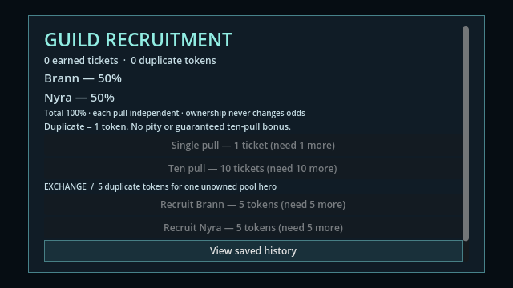
经验收益增加，后续战斗更危险。
在商人、祭坛和救援间选择；完成海岸章节后仍可重复挑战。
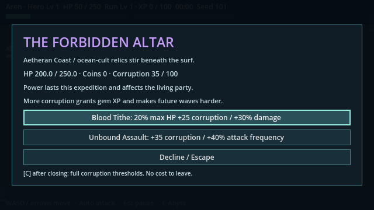
公会、HUD、暂停、结算与 F9 沙盒。
可用键盘选项；开发版调整等级、转职、刷怪和 1× / 2× / 4× 速度。
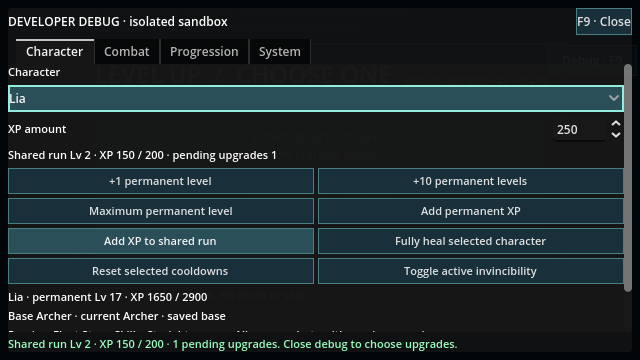
原子结算、存档迁移、失败重试。
重开游戏保留角色、转职和章节；保存失败时可重试同一结果。
v1/v2→v3 迁移与代际存储接线；persistence / integration_m2 / integration_m3 本次通过。不支持局内断点续玩；临时升级、金币和腐化均重置。
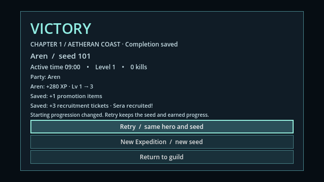
可辨认的原创程序轮廓与战斗反馈。
用形状、颜色和预警辨识角色与危险；当前仍是占位画面。
ActorPresentation实时绘制轮廓与姿态。美术方向列有替换计划：独立立绘与正式动画精灵表未实现。密集场景辨识与显示延迟待人工/设备验收。
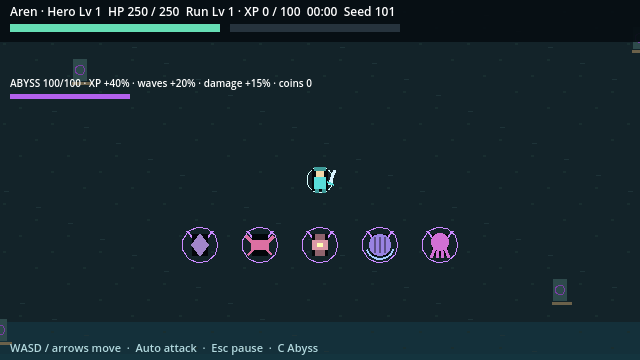
此筛选下没有功能。
内容来自六份 CharacterDefinition 与对应 SkillDefinition。
暂无独立角色立绘。下方字母框为中性占位；战斗中的外观按职业共用程序轮廓。
Swordsman · 初始拥有
近身弧斩 · Resolute
被动：受到伤害减少 10%。
Swordmaster / Abyss Swordsman
角色数据 ↗Archer · 初始拥有
直线箭矢 · Fleet Step
被动：起始移动速度增加 10%。
Sharpshooter / Star Hunter
角色数据 ↗Mage · 初始拥有
追踪星弹 · Arcane Pulse
被动：每第五次攻击增伤 50%。
Elemental Sage / Void Caster
角色数据 ↗Mage · 剧情救援
追踪星弹 · Guiding Light
每 20 秒治疗最低血量比例存活队友 2%。
Elemental Sage / Void Caster
角色数据 ↗Swordsman · 抽取 / 兑换
近身弧斩 · Bastion
每个 20 秒区间的首个有效受击减伤 50%。
Swordmaster / Abyss Swordsman
角色数据 ↗Archer · 抽取 / 兑换
直线箭矢 · Far Sight
被动：起始索敌范围增加 20%。
Sharpshooter / Star Hunter
角色数据 ↗验证范围：技能、获取与所有权自动测试通过；不代表六名角色均已完成人工平衡验收。
永久等级 ≥15 ＋ 1 件转职道具 · 每名角色只能永久选择一支 · 被动保留
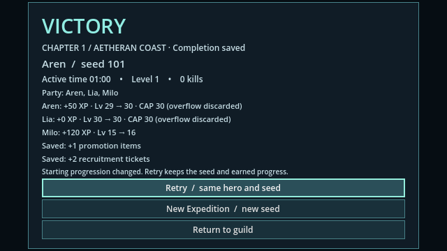
双弧斩；每第五次追加全周旋斩。
长弧斩；第五次实际命中治疗自身 2%。
箭穿透最多三敌；第五次三箭齐射。
一次异敌弹射；第五次标记延迟打击。
火焰溅射与冰霜交替；第五次元素爆发。
命中留伤害环；第五次追加牵引区域。
从 0 开始，每完整战斗分钟 +5。按 C 查看精确后果；风险累积作用于后续生成内容。
后续波次数量 ×1.10
Broodmother 权重增加
新常规敌人伤害 ×1.15
波次数量 ×1.20，首领追加预警圆
开发模式用于快速复现；沙盒奖励不进入正常档案。
Hero Lv 是永久等级；Run Lv / XP 是本局共享成长。F9 打开时冻结战斗，关闭后保留已有暂停原因。
调等级与经验、预览分支、添加已拥有同伴、安全刷怪与首领、无敌、倍速、隔离保存。
建议用固定 Godot 4.5 打开当前源码 F5；旧 debug-panel 可执行文件是历史交付。XP 修复证据记录了新目录导出。当前源码 debug_panel 69 条断言通过；源码图形 97 条、实际发布版禁用检查 20 条通过。本轮重导出与验证边界。
最近原生复核：2026-10-16 · 固定 Godot 4.5 · 本轮含原生、源码及实际 Windows EXE 受控图形；人工验收仍开放。
内容校验：51 份根 Resource、27 个场景、98 个交付脚本。另完整加载 145 脚本 / 29 场景，0 错误；升级配置与输入记录已更新。
| 测试组 | 断言 |
|---|---|
| unit | 202 |
| scene_smoke | 131 |
| integration_m1 | 37 |
| replay | 44 |
| full_run | 9 |
| progression | 13 |
| persistence | 343 |
| abilities | 123 |
| integration_m2 | 45 |
| recruitment | 293 |
| integration_m3 | 196 |
| integration_m4 | 3734 |
| debug_panel | 69 |
本轮完整报告记录源码及实际发布版在 1280×720、1920×1080、1371×813 的受控图形回归。M4 已重新导出并实际启动；M2 / M3 / M4 发布版受控图形与禁调试检查通过。此前 4551 失败日志保留。
本轮 replay 覆盖二十对固定种子/所有权场景，新增实际移动记录/重放；persistence 覆盖二十组 v3 结算中断与既有失败矩阵。full_run 三初始角色 seed 101 均胜利，为加速模拟结果，不是普通玩家通关时长。
当前 release 三 seed p95：27.571 / 27.670 / 29.259 ms，均超预算。实际计数与主动时间捕获有效；参考机与显示延迟仍未验收。
十人体验 / 契约理解、二十次普通通关、完整离线手动流程尚未完成。
移动与命中反馈已实现，但显示延迟、密集画面辨识目标未实测。
正式动画精灵表、独立角色立绘；当前为程序占位。
p95 帧耗时，单位 ms。竖线为 16.67 ms 目标；条长仅表示耗时，不是完成率。
Ryzen 7 5800H / GTX 1650，100 常规敌人、1 首领、双同伴、最大腐化、500 宝石。原始协议与限制。本次已重跑三组完整采样，原始数据另存于验证报告；上图保留历史结果。
验收仍开放：T180 / T181 / T182 / T183 / T190，及此前人工/硬件条件。当前 EXE 自动启动检查通过。
文档：双击本 HTML 可离线查看。游戏：运行本地发布版或固定版本源码。
project.godot，按 F5。在公会的角色选择里分别测试三名初始角色。# 启动当前源码
& './tools/godot-4.5/Godot_v4.5-stable_win64.exe' --path .
# 原生自动校验（不含图形或导出）
./tools/run_validation.ps1 -M4
# 完整受控检查与导出；仍不替代人工验收
./tools/run_validation.ps1 -M4 -Graphical -Export版本针：4.5.stable.official.876b29033。project.godot 的 features 已由 4.7 修正为固定 4.5，并完整复测。显示名仍保留旧 M3 文案。